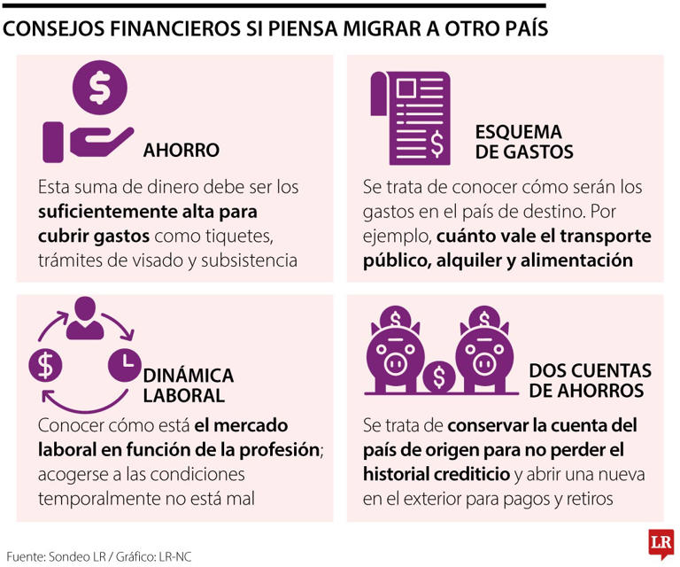
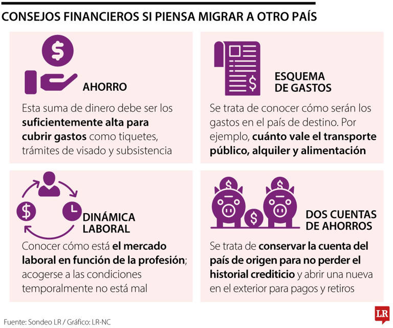

Un gasto va más allá de simplemente sacar dinero de tu bolsillo.
Es un desembolso (cantidad de dinero efectivo que entregamos, por haber realizado una compra o adquisición)
de dinero que realizas para obtener un bien o servicio.
Cada vez que pagas por algo que consumes o utilizas, incurres en un gasto.
Entender y manejar estos gastos es fundamental para mantener una buena salud financiera,
tanto en el ámbito personal como en el empresarial.
A diferencia de las inversiones, que buscan brindar un retorno en el futuro
(como al adquirir acciones), los gastos
son los costos indispensables para sostener tu vida cotidiana o el funcionamiento de un negocio.
Clasificación de gastos
Es crucial que puedas distinguir entre los diferentes tipos de gastos. Esto te ayudará a elaborar un presupuesto adecuado y detectar oportunidades para ahorrar.
A continuación te presento los diferentes tipos de gastos que puedes encontrar:
Gastos Fijos
Se trata de aquellos que permanecen estables y se repiten cada mes. No varían, o lo hacen mínimamente,
y deben pagarse sin excepción. Constituyen el pilar de tu presupuesto.
Ejemplos:
El alquiler de tu hogar
La hipoteca
Los pagos mensuales de un vehículo o un seguro
Suscripciones a servicios (como Netflix, Spotify)
Gastos variables
Estos son gastos que cambian cada mes y dependen de tu consumo o decisiones. Son más flexibles y, por ende, más fáciles de reducir si quieres ahorrar.
Ejemplos:
La factura de electricidad
El gasto en el supermercado
El costo de la gasolina
Salidas a restaurantes o actividades recreativas
Gastos hormiga
Estos son pequeños gastos que, individualmente, pueden parecer irrelevantes, pero cuando se suman a lo largo del mes, impactan considerablemente en tus finanzas.
Evitar deudas: Saber cuánto gastas te permite asegurarte de que tus egresos no superen tus ingresos.
Ahorrar: Al detectar gastos innecesarios (especialmente los variables y hormiga), puedes redirigir ese dinero a una cuenta de ahorros o inversión.
Planificar el futuro: Comprender tus gastos te proporciona la capacidad de planificar mejor tus objetivos a largo plazo, como comprar una vivienda, viajar o prepararte para la jubilación.
¿Cómo revisamos nuestros gastos?
Revisar tus gastos es la actividad de examinar cómo se utiliza tu dinero para comprender tus hábitos financieros. Este es el primer paso hacia la elaboración de un presupuesto, aumentar tus ahorros o eliminar deudas. A continuación, te mostramos cómo llevar a cabo este proceso en tres etapas simples:
Evalúa los resultados y toma decisiones:
Con tus gastos organizados, es el momento de hacer un análisis y detectar dónde puedes realizar mejoras.
Identifica oportunidades de ahorro: ¿Estás invirtiendo demasiado en entretenimiento? ¿Tus gastos menores suman una cantidad significativa mensualmente? La idea es localizar esos aspectos en los que puedes reducir el gasto sin comprometer tu bienestar.
Modifica tu presupuesto: Basado en tu evaluación, puedes elaborar un presupuesto factible. Por ejemplo, si notas que gastas $300 en restaurantes, podrías optar por recortarlo a $200 y destinar los $100 restantes a tus ahorros.
Herramientas para revisar tus gastos:
Hojas de cálculo (Excel, Hojas de Google): Son óptimas para quienes prefieren tener flexibilidad y control completo.
Aplicaciones de gestión financiera: Aplicaciones como Fintonic, Mint o YNAB se sincronizan con tus cuentas bancarias y organizan tus gastos automáticamente.
Para comenzar a gestionar tus gastos de manera efectiva, sigue estos pasos:
Registra tus gastos: Lleva un registro de todos tus gastos durante al menos un mes. Puedes usar aplicaciones móviles, hojas de cálculo o simplemente un cuaderno.
Categoriza tus gastos: Clasifica tus gastos en fijos, variables y hormiga. Esto te ayudará a identificar patrones y áreas donde puedes reducir costos.
Establece un presupuesto: Basado en tus ingresos y gastos, crea un presupuesto mensual que te permita vivir dentro de tus posibilidades.
Revisa y ajusta: Revisa tu presupuesto regularmente y ajústalo según sea necesario. Si encuentras que estás gastando más de lo planeado en una categoría, busca formas de reducir esos gastos.
Prioriza el ahorro: Destina una parte de tus ingresos al ahorro antes de gastar en otras cosas. Considera establecer una cuenta de ahorros separada para tus metas financieras.
Consejos para reducir gastos
Reducir tus gastos no significa sacrificar tu calidad de vida. Aquí hay algunos consejos prácticos:
Evita compras impulsivas: Antes de comprar algo, pregúntate si realmente lo necesitas. Espera 24 horas antes de tomar una decisión.
Compara precios: Antes de realizar una compra, compara precios en diferentes tiendas o plataformas en línea para asegurarte de obtener la mejor oferta.
Cocina en casa: Preparar tus comidas en casa es generalmente más económico que comer fuera. Planifica tus comidas y haz una lista de compras para evitar compras innecesarias.
Revisa suscripciones: Cancela aquellas suscripciones que no utilizas regularmente, como servicios de streaming o revistas.
Aprovecha descuentos y ofertas: Utiliza cupones, descuentos y promociones para reducir el costo de tus compras.
Utiliza el transporte público: Si es posible, utiliza el transporte público en lugar de conducir. Esto puede ahorrarte dinero en gasolina y estacionamiento.
Logro de metas financieras: Con una buena gestión de gastos, es más fácil alcanzar tus objetivos financieros, como comprar una casa, viajar o ahorrar para la jubilación.
Mayor libertad financiera: Al reducir tus deudas y aumentar tus ahorros, obtienes más libertad para tomar decisiones financieras sin preocupaciones.
Cómo poner en práctica lo aprendido: Una guía sencilla para tu dinero
Evalúa tus “zombies financieros”: Reflexiona sobre todas las suscripciones que posees (servicios de streaming, aplicaciones, gimnasio). ¿Realmente las utilizas todas? Es habitual pagar por servicios que han quedado en el olvido. Dedica 15 minutos a revisar tus extractos y elimina cualquier suscripción que ya no necesites.
Negocia con tus proveedores: No tomes el primer precio que te ofrecen. Solicita presupuestos a diferentes empresas y negocia. Habla con tus proveedores actuales y pregúntales si pueden mejorarte las condiciones.
Automatiza las tareas tediosas: Utilizar un software que realice la contabilidad y gestione los informes de gastos por ti no es un lujo, es una inversión. Te ahorra tiempo, minimiza errores y permite que tus empleados se concentren en tareas más relevantes.
Define reglas claras: Establece una política de gastos para la empresa. Informa a tu equipo acerca de los límites de gasto en viajes, comidas y otros recursos. Esto previene sorpresas y ayuda a mantener el control.
Paso 2: Emplea las Herramientas Adecuadas
No es necesario ser un experto en finanzas para administrar tus gastos. Las herramientas están disponibles para asistirte en esta tarea.
Para aquellos que prefieren el control manual: Utilizar una hoja de cálculo (ya sea Excel o Hojas de Google) es una herramienta muy efectiva. Puedes diseñar tu propio presupuesto y analizar tus cifras como un profesional. Además, hay numerosas plantillas gratuitas disponibles en la web.
Para la administración de negocios
Software para gestión de gastos: Herramientas como Expensify o Pleo están creadas para que tus empleados tomen una fotografía de un recibo y el gasto se registre de manera automática. Esto facilita considerablemente la contabilidad.
Software de contabilidad: Aplicaciones como QuickBooks o Holded te brindan la posibilidad de administrar todas las finanzas de tu empresa desde un solo sitio: abarcando facturas, gastos e impuestos.


 
